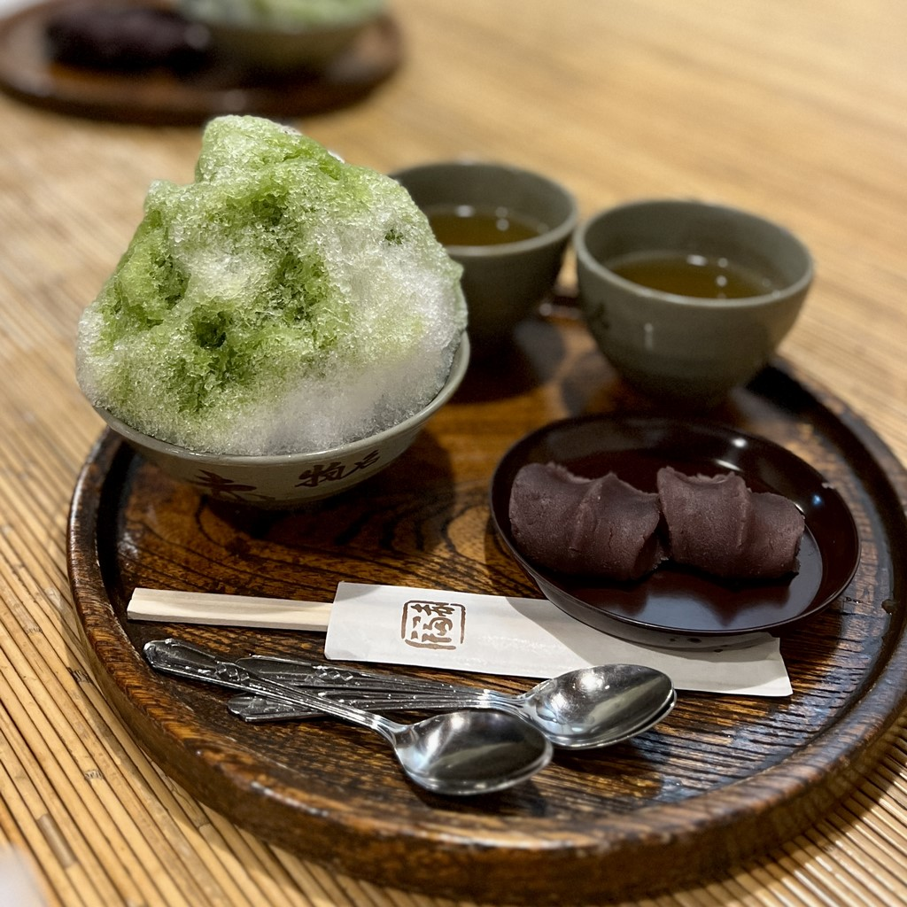
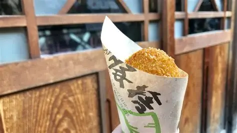
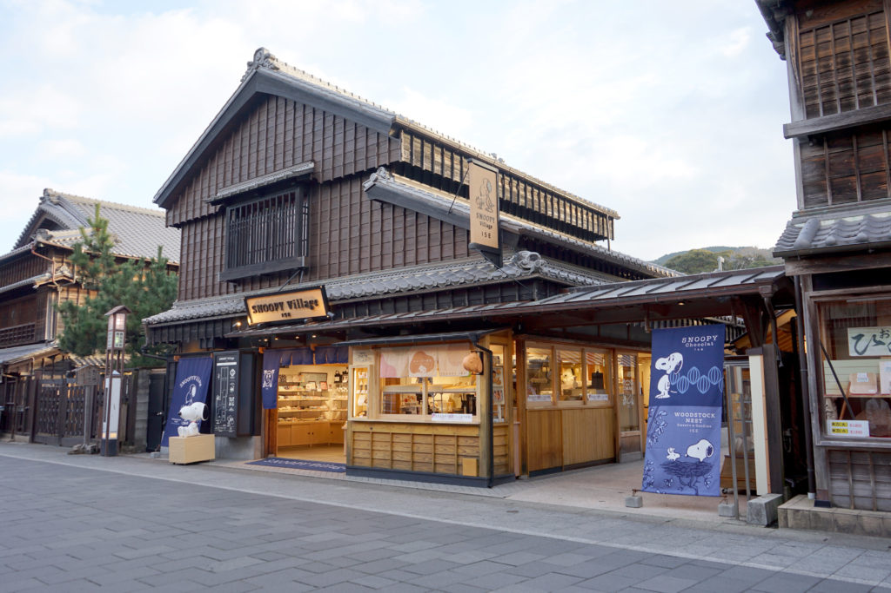
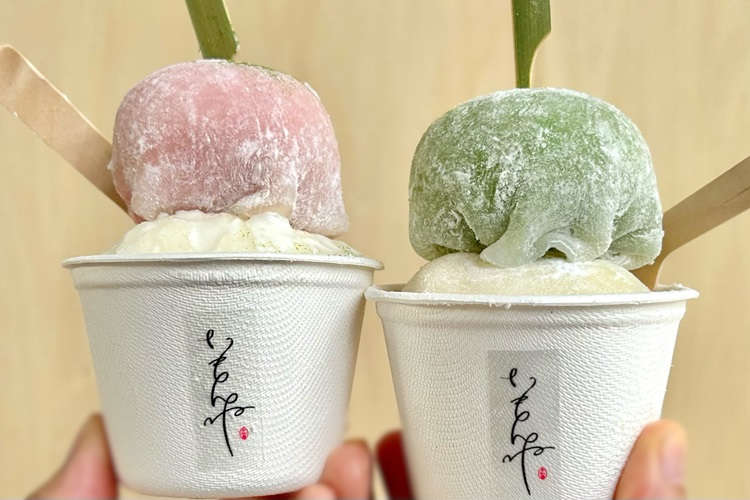
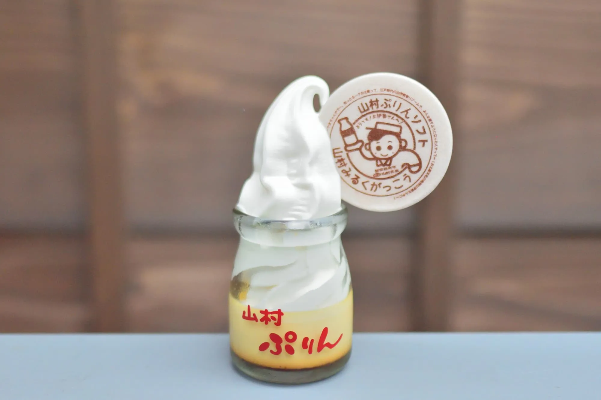
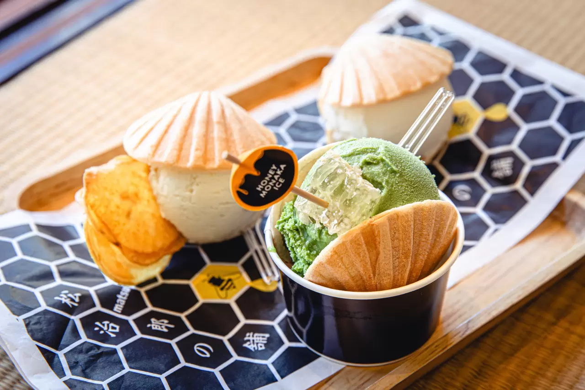
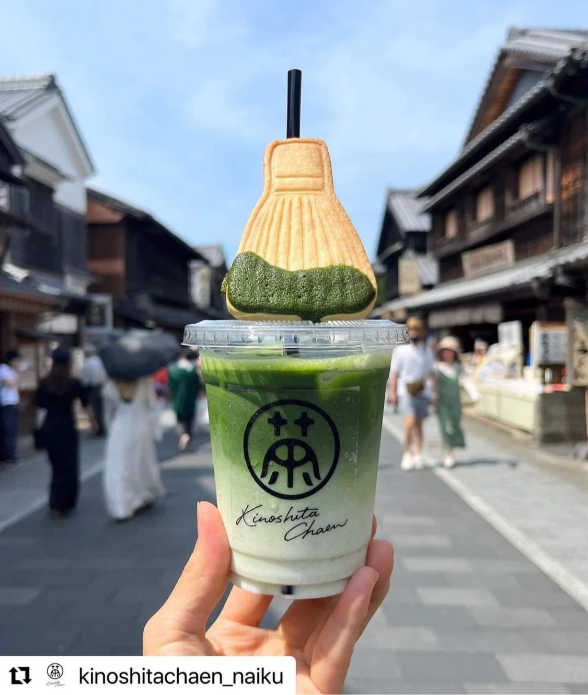
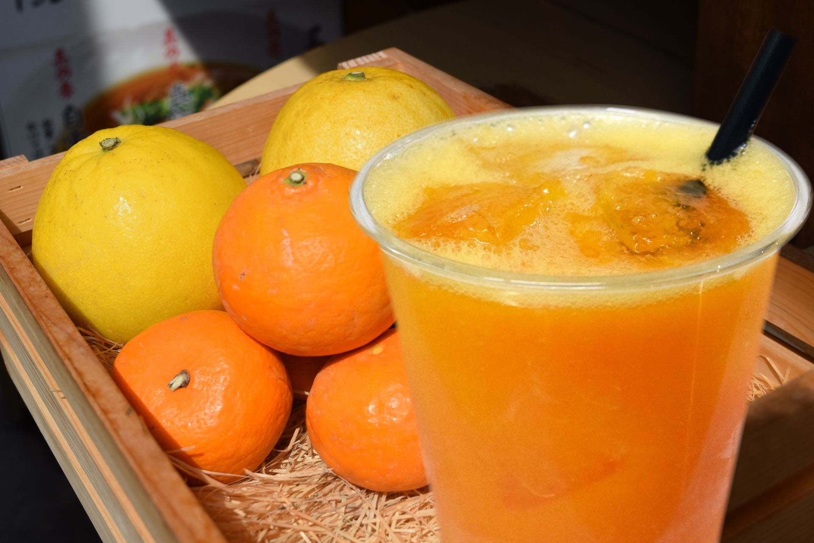
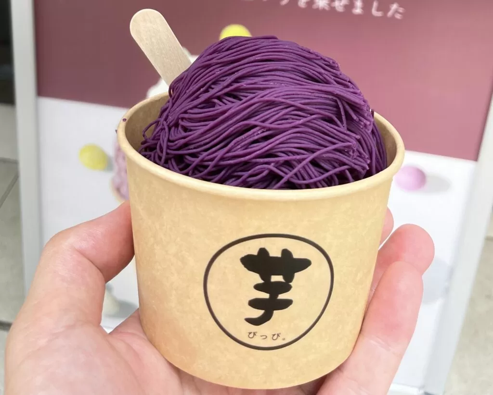
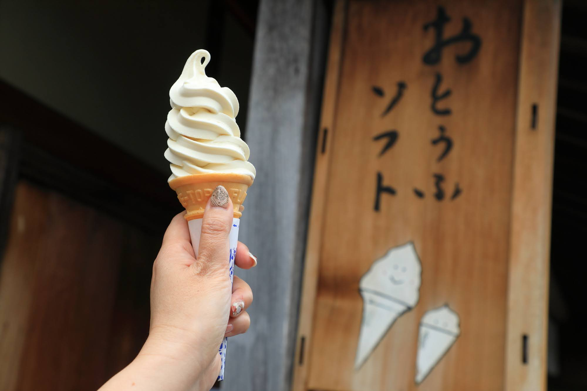

今回の流れ
🚗
A4駐車場
満車の場合はA1・A2駐車場
🍡
おかげ横丁散策
行きたいお店にめぼしをつけましょう☆
🍽️
野あそび棚
2026/07/31(金) 12:00予約
🍡
自由散策
デザートタイム
🚗
駐車場へ戻る
A4・A1・A2
アクセスマップ
予約済みランチ
おすすめ

赤福
伊勢名物。 出来たてがおすすめ。

豚捨
コロッケが大人気。

SNOOPY茶屋 伊勢
スヌーピーグッズ・スヌーピー焼き。

イモンネ 伊勢内宮前店
干し芋農家のパティシエによるジェラート＆洋菓子の専門店。

山村ミルクがっこう
瓶入りのプリンソフト

松治郎の舗
はちみつがおいしい！お土産にもGOOD!

木下茶園
伊勢の小さなお茶屋さん

フルーツラボ
しぼりたてのフレッシュジュース・かき氷

1mm絹糸の紫芋とアイス
紫芋を使ったアイス。

豆腐庵山中
豆乳ソフト・卯の花ドーナツ